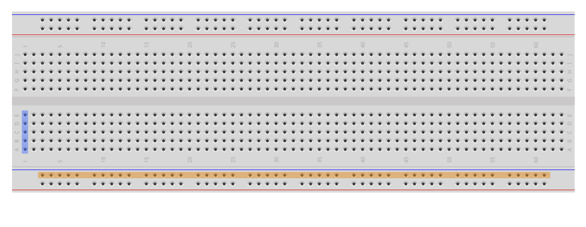
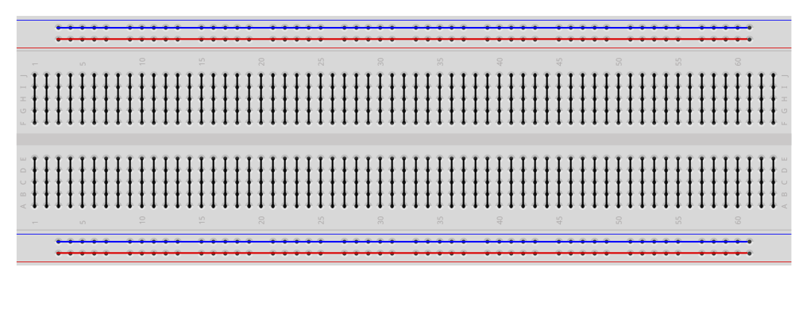

Breadboard
Breadboard = Pokusná doska
Keď hovoríme o riadkoch a stĺpcoch na breadborde vždy uvažujeme,
že sa na breadboard pozeráme tak, že dlhšia strana je vertikála. (Formát na výšku).
Na obrázku Breadboard00.pdf je riadok (1) vyznačený modrou a stĺpec (napájanie) oranžovou.
Dierky v riadkoch sú navzájom prepojené.
V strede breadbordu je drážka, ktoré rozdeluje riadky na ľavé a pravé.
Ľavé a pravé riadky niesú prepojené.
Na stranách breadbordu sú stĺpce (môžu byť označené modrou a červenou, znakom + / -)
Dierky v stĺpcoch sú navzájom prepojené. Pozor, na niektorých breadbordoch, môžu byť stĺpce prerušené.
Tieto stĺpce slúžia na napájanie.
Obrázok Breadboard01.pdf zobrazuje prepojenie dierok v riadkoch a stĺpcoch.
Farba vodičov
Farba vodičov nám sĺuži na ľahšie pochopenie a orientáciu zapojenia. Farba nemá vplyv na funkcionalitu vodičov.
Zaužívané farby vodičov:
červená = (+) 5V, (+) 3.3V, ...
čierna = GND
modrá = niekedy GND, záporné napätie (-)
ostatné farby = rôzne piny, rôzne použiti

